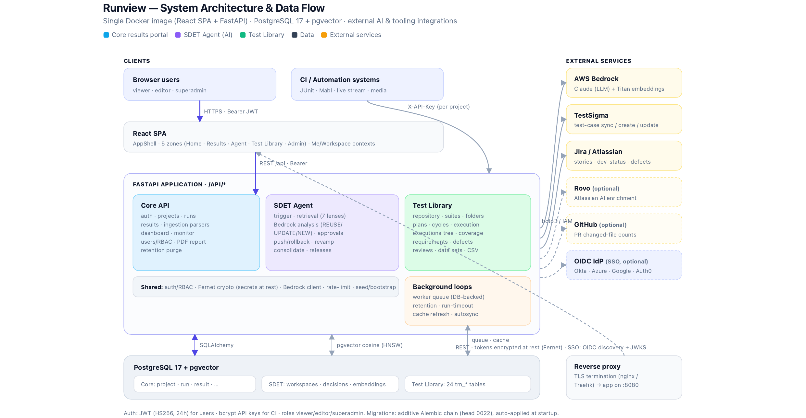
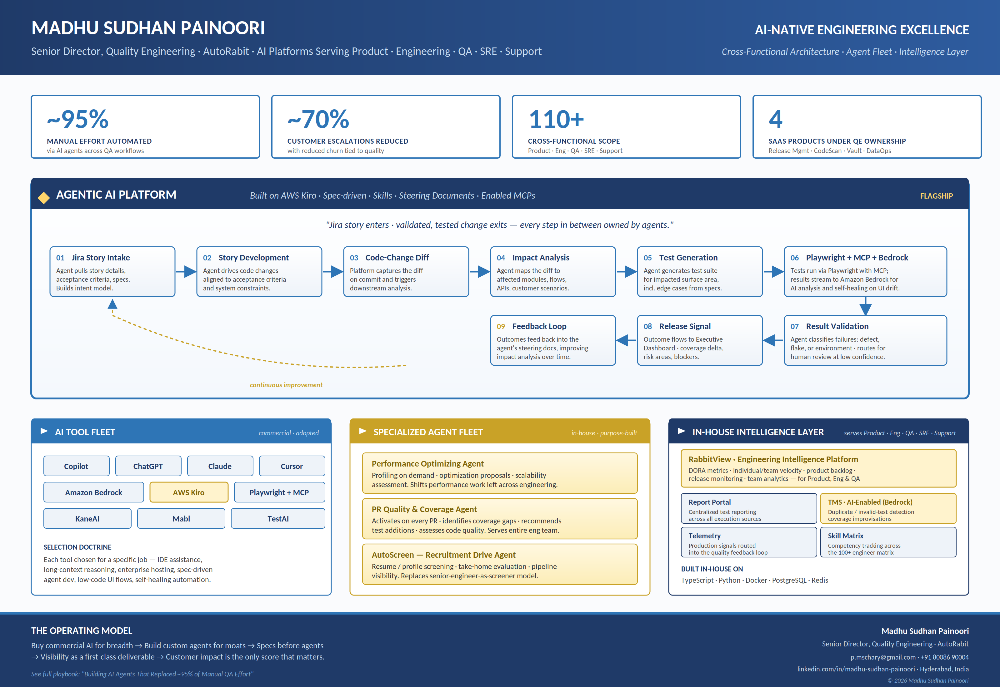

I lead Quality Engineering at AutoRabit, the DevSecOps platform for Salesforce, running a 50-person QA org with 100+ matrix scope across Product, Engineering, QA, SRE, and Support. I also stay hands-on: I architected and built RunView from scratch — an agentic test-intelligence platform with a 7-lens RAG retrieval engine, AWS Bedrock reasoning, human-in-the-loop approval, and self-healing Playwright automation, on FastAPI · React 19 · PostgreSQL/pgvector.
The work at AutoRabit isn't just QE. It's a connected system of AI platforms, agent fleets, and engineering intelligence tools that serve every team — and remove the most painful 95% of recurring manual work.
Built on AWS Kiro with specs, skills, steering documents, and curated MCPs. Consumes a Jira story; returns a validated release.
Purpose-built agents serving the broader engineering organization, not just QE — extending the AI investment across the team.
The single pane of glass for Product, Engineering, and QA leadership. The platform that explains why my matrix scope is cross-functional.
A self-hosted platform I architected and wrote from scratch: three products on one backend — a CI results portal, an AI SDET agent, and a full test-management workspace. It turns a Jira story into reviewed, traceable test cases through retrieval-augmented reasoning and a human approval gate, and authors and self-heals its own Playwright automation. Shipped as a single hardened Docker image, multi-workspace across ARM, CodeScan, Vault, Guard, and Salesforce.
Ingests JUnit, Mabl, and live-stream runs by API key. Dashboards, flaky-test detection, per-test history, a deployment-health monitor, and printable reports — with automatic retention purging.
An async, human-in-the-loop agent. Pulls Jira/PR context, runs 7-lens vector retrieval, and uses Bedrock/Claude to classify each case REUSE / UPDATE / NEW — then pushes to TestSigma only after approval, reversibly.
Suites, folders, plans, cycles, and an inline-checklist runner. Requirements traceability, defects, reviews, and automation-to-case mapping that surfaces coverage gaps — 28 workspace-scoped, audited tables.
One backend, three pillars, and the external services they orchestrate — clients and CI on the left, AI and tooling integrations on the right, all scoped per workspace with secrets encrypted at rest.

A single SDET run: a DB-backed worker queue claims the job, gathers context, embeds and retrieves across seven lenses, reasons with Bedrock across two concurrency lanes, and stops at a human approval gate before any reversible write.
POST /api/sdet-agent/runseditor · { workspace, story_key, tester_prompt? } — queued, no Redis or Celery.FOR UPDATE SKIP LOCKED), with per-workspace fairness caps, retry/backoff, and trigger dedupe.REUSE / UPDATE / NEW with reasoning, lens evidence, confidence, and a parallel performance-impact assessment.A query embedding fans out across candidate test cases, KB pages, code symbols, historical defects, Salesforce metadata, integration touchpoints, and user docs — so proposals are grounded in real context, not guesses.
1024-dim Titan embeddings indexed with pgvector HNSW cosine search, living right beside the relational data in PostgreSQL — no separate vector store to operate.
An interactive lane keeps on-demand runs responsive while a capped background lane handles bulk revamp and release analysis — so heavy jobs never starve the UI.
Editors review, superadmins approve behind an 85% similarity guard, and every push to TestSigma stores a before/after snapshot — so any write can be rolled back.
Generates Playwright specs via the Claude Code CLI, validates against the live app, and self-heals up to N times — a real product failure is classified and surfaced, not healed forever.
One multi-stage Docker image (non-root UID 10001, dropped capabilities), Postgres on an internal network, additive Alembic migrations, and optional OIDC SSO with secrets encrypted at rest.
RunView is one build among several. This is the wider AI-native engineering system I run at AutoRabit: the agentic delivery platform, the specialized agent fleet, and RabbitView, the intelligence layer that serves Product, Engineering, and QA leadership.

12 pages, written for engineering leaders being asked to do more with AI. Not a vendor pitch. A candid walkthrough of what worked, what didn't, and what I'd do differently.
Manual QA bottleneck, monolith-to-microservices transformation, regression cycles that couldn't keep pace with engineering velocity.
Agents do the work. Buy commercial AI for breadth, build custom for moats. Specs before agents. Visibility is non-negotiable. Customer impact is the only score.
Built on AWS Kiro: specs, trained skills, steering documents, enabled MCPs. Jira to validated release as one continuous agent workflow.
Performance Optimizing Agent, PR Quality & Coverage Agent, AutoScreen — and the pattern that made each of them succeed.
What worked, what didn't work at first, and the frontier ahead — multi-agent coordination and customer-telemetry-driven prioritization.
From production DBA to Quality Engineering leadership, the throughline never changed: scale engineering quality without scaling effort linearly. Agentic AI is the latest answer to a question I've been working on for two decades.
Lead a 50-person QA org with 100+ matrix scope across Product, Engineering, QA, SRE, and Support. Architected and built RunView (agentic test-intelligence platform), the AWS Bedrock + Kiro agentic delivery pipeline, and RabbitView (engineering intelligence). Automated ~95% of manual effort and cut customer escalations ~70%.
Established and led a 10-member QA team for a Netherlands-based EdTech platform digitizing schools nationwide. Owned release management end-to-end and security validation for the public-facing application.
QA leadership across Oracle WebCenter Sites, Sites Cloud Service, and Documents Cloud Service. Owned performance engineering, profiling, and security testing for enterprise content management at Oracle scale.
Production DBA for the Disney Playdom Facebook gaming portfolio. Tuned MySQL schemas, queries, and APIs to sustain Facebook-scale gaming traffic.
Certified Zeta Mail (Flash) for 1,000 concurrent users at sub-5-second SLAs. Benchmarked Zeta Next Pages for 10,000 concurrent users. Led the MySQL 5.0 to 5.1 migration with zero data loss.
Selected for fit, not for novelty. Highlighted in gold: the platforms and systems I've built on — not just consumed.
I'm currently Senior Director, Quality Engineering at AutoRabit, and open to VP and Director roles in AI Quality Engineering, Engineering Effectiveness / Developer Productivity, or AI Platform Engineering.
I'm a leader who still ships: comfortable owning org strategy and writing the agentic platform behind it. Most interested in SaaS, AI-native, and Salesforce-ecosystem companies building serious AI into their engineering.
The fastest way to reach me is email — I respond to most inquiries within 48 hours.
{kind=link}